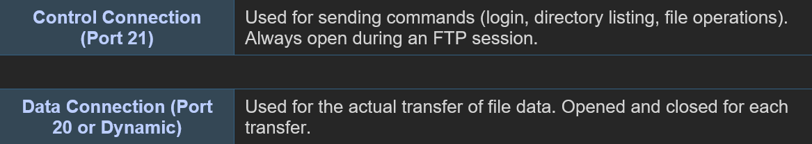
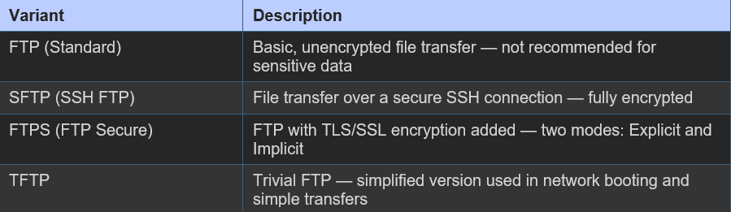

FTP is a standard network protocol used for the transfer of files between a client and a server on a computer network. It is built on a client-server model and uses separate control and data connections between the client and the server.
FTP Connection Modes

FTP Transfer Modes
- Active Mode:Client opens a port and the server initiates the data connection back to the client
- Passive Mode:Server opens a port and the client initiates the data connection — preferred for clients behind firewalls
FTP Variants
